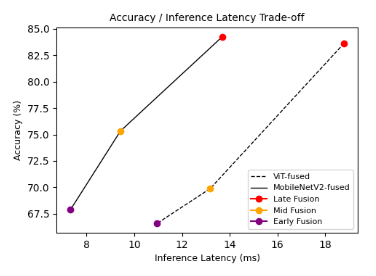

Software Engineer, Computer Science M.S. Student
Bio
I am a programmer with a focus in applied machine learning based in Columbia, South Carolina. I study Computer Science at the University of South Carolina and work in the Heterogeneous and Reconfigurable Computing (HeRC) Lab under Professor Jason D. Bakos. I also work with Professor Julius Fridriksson, VP of Research at UofSC, on the ALLT.ai project.
For my master's thesis, I am researching multimodal machine learning systems. I have preprinted the first step in this research, where I create a hybrid BERT-MobileNetV2 model framework at different levels of fusion. I show that later fusion yields higher accuracy but more inference latency, while early fusion gains inference speed but drops in accuracy. This research has also been submitted to CVPR 2026.
Preprint: Exploring Performance Trade-offs in Multimodal Vision-Language Edge Systems.View the code.
